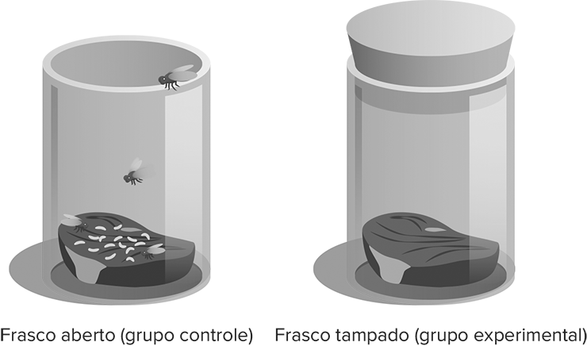
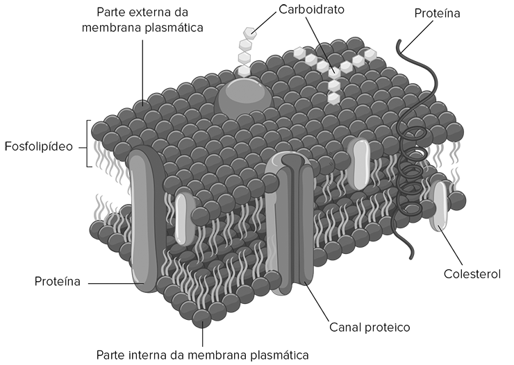

O biólogo é o profissional que estuda a vida.
gorodenkoff/iStockphoto.com
Você já percebeu a imensa variedade de seres vivos que habitam o nosso planeta? Temos desde organismos microscópicos, como as bactérias e os protozoários, até alguns extremamente grandes, como as baleias e as sequoias. O estudo dos seres vivos e de seus processos biológicos é realizado por uma área abrangente das Ciências da Natureza denominada Biologia.
Os cientistas que estudam os seres vivos, os biólogos, produzem conhecimento utilizando uma ferramenta metodológica que permite questioná-lo, testá-lo e reformulá-lo ao longo do tempo e de acordo com a investigação, diferentemente do que ocorre com os dogmas, considerados verdades inquestionáveis. Nesse sentido, compreender a Biologia como uma realização humana voltada à aquisição de conhecimento sobre a natureza é fundamental para valorizar o papel dessa ciência na sociedade contemporânea.
- O que um biólogo estuda?
- Por que é importante que os experimentos biológicos sigam uma metodologia?
- Qual é a diferença entre hipótese e teoria científica?
Neste capítulo serão abordadas as habilidades EM13CNT202, EM13CNT301 e EM13CNT303.
Introdução à Biologia
Os primeiros cientistas não tinham uma visão unificada dos seres vivos nem dos processos biológicos. Eles classificavam as entidades da natureza com base em três grandes reinos: Mineral, Animal e Vegetal – na qual plantas seriam tão distantes dos animais quanto dos minerais.
Conforme o conhecimento científico foi ampliando-se, essa classificação foi revista. Entre outras questões, os estudos indicaram que animais e plantas têm características únicas comuns que não são compartilhadas com os minerais, mas que estão presentes em bactérias, fungos, protozoários e algas, classificando todos em um único grupo: o dos seres vivos.
O termo “biologia” (do grego bios e logos, que significam, respectivamente, "vida" e "estudo") refere-se à área que estuda esses seres e os processos biológicos, do nível microscópico (síntese de proteínas nas células) ao macroscópico (interação dos seres vivos entre si e com o meio que os cerca), representando uma área abrangente de conhecimento das Ciências da Natureza.
Origem da Biologia
Embora a Biologia moderna tenha se desenvolvido há pouco tempo, estudos envolvendo assuntos relacionados a essa área são realizados desde as antigas civilizações, como os povos da Mesopotâmia, do Egito, da Índia e da China. No entanto, o pensamento científico ocidental teve seu início nos trabalhos dos pensadores da Grécia Antiga.
Os filósofos gregos acreditavam que a mente humana era capaz de compreender os fenômenos e os processos da natureza por meio de observações, argumentações e deduções, e não conforme termos religiosos e espirituais, como se costumava fazer nas sociedades antigas.
Com a decadência da civilização grega e a ascensão do Império Romano, o pensamento grego se manteve sem grandes estudos sobre os seres vivos. Além disso, na Europa, a veneração aos textos clássicos fez com que os ensinamentos de filósofos gregos e romanos ficassem anos sem questionamento, pois o ensino formal era ministrado quase exclusivamente em instituições religiosas. Assim, conceitos antigos foram incorporados aos ensinamentos cristãos e se fixaram de tal modo que não poderiam ser alterados.
A ruptura dessa visão de mundo ocorreu com o Renascimento, um movimento cultural, econômico e político que se deu na Europa entre os séculos XIV e XVI e que renovou a confiança no intelecto e no potencial humano. A partir daí, os estudiosos começaram a desvendar as leis que governam os processos físicos e naturais e a descobrir que o mundo não era tão misterioso e imutável como parecia. Nessa época, entre os séculos XV e XVI, foram desenvolvidos os microscópios, o que possibilitou a descoberta de um mundo até então desconhecido: o dos microrganismos.
Os gregos também foram fundamentais para o surgimento, em meados do século XVIII, do racionalismo – uma linha de pensamento que se baseava na busca da certeza por meio de demonstração e análise, ou seja, produzida apenas pelo raciocínio e razão. Em relação ao estudo dos seres vivos, grandes avanços foram feitos, desde os sistemas de classificação propostos por Carl von Linné (1707-1778) até o desenvolvimento do pensamento evolutivo por Jean-Baptiste Lamarck (1744-1829).
No século XIX, a publicação do livro A Origem das Espécies, por Charles Darwin (1809-1882), mudou o pensamento biológico e a forma de estudar os seres vivos. Já a partir do desenvolvimento da genética e da descoberta do DNA, durante o século XX, foi possível compreender o funcionamento da transmissão de caracteres hereditários, fato que, junto ao crescimento dos estudos sobre a evolução, foi fundamental para a Biologia atual.
Reprodução A história da Biologia. Anne Rooney. Editora M. Books: São Paulo, 2018.O livro busca esclarecer algumas dúvidas cruciais sobre o estudo da Biologia, a fim de ampliar a compreensão do mundo natural, desde a origem proposta por mitos e lendas até a ciência moderna, passando pelo desenvolvimento do estudo metodológico por meio da experimentação.
... o senso comum está caracterizado pela postura passiva de aceitação, ou seja, pela falta de um olhar crítico em relação ao fenômenos que acontecem ao nosso redor. Assim, a atitude filosófica está intimamente ligada com as descobertas científicas, já que busca fazer perguntas ao se observar fenômenos, formula hipóteses, propõe e testa deduções. Ao encontrar as respostas são derrubados pressupostos e preconceitos que embasam as opiniões do senso comum e os fenômenos são explicados fundamentados em uma atitude crítica e filosófica, que caracteriza também o método científico.Graças ao pensamento filosófico, o conhecimento científico é dinâmico, podendo ser revisto a medida em que as investigações avançam no decorrer do tempo. As teorias são coerentes, sistemáticas, preditivas e amplamente aplicáveis, muitas vezes integrando e generalizando diversas hipóteses.Provavelmente, no início da aula, os alunos ainda podem confundir hipótese e teoria. No entanto, esses conceitos serão construídos no decorrer do capítulo.
A metodologia científica não é uma “receita de bolo” que todos os cientistas devem seguir à risca, mas um caminho muito comum e que geralmente é utilizado na produção de conhecimento científico.
Método científico
Durante a Revolução Científica, movimento que ocorreu na Europa a partir do Renascimento, as formas de interpretar a natureza passaram por mudanças profundas e radicais, que acabaram estabelecendo as bases das concepções científicas modernas.
Hoje, na Biologia, os cientistas realizam dois tipos principais de pesquisa científica: a ciência da descoberta e a ciência baseada nas hipóteses.
A ciência da descoberta está relacionada à revelação de novos dados, materiais ou informações em um estudo científico, que levarão a novos conhecimentos sem que haja uma necessidade específica para essa descoberta. No caso da Biologia, essa ciência envolve a descrição de seres vivos ou de processos biológicos, como o estudo descritivo da anatomia foliar de uma planta ou a observação do comportamento reprodutivo de um animal.
Já a ciência com base em hipóteses, que se apoia no método científico, envolve a busca de explicações para os fenômenos, seguindo procedimentos rigorosos que devem ser executados para que ocorra a produção de conhecimento científico, como analisar a influência da luz no crescimento de uma planta.
De forma geral e resumida, o método científico apresenta as seguintes etapas lógicas:
- Observação de um fenômeno natural.
- Elaboração de uma pergunta sobre o fenômeno observado.
- Formulação de uma hipótese para responder à pergunta.
- Proposição de deduções a partir da hipótese.
- Teste das deduções, por meio de observações adicionais ou experimentos.
- Análise dos resultados e conclusão com relação à validade da hipótese.
Para ilustrar essas etapas, vamos utilizar o seguinte exemplo de um fenômeno natural: a presença de vermes nos cadáveres.
Na primeira fase do método científico, começaremos com a observação dos fenômenos da natureza. A partir dessa observação, o cientista deve formular uma pergunta original sobre o fenômeno observado, por exemplo: “Como surgem os vermes nos cadáveres?”.
Essa dúvida (ou questionamento) é essencial para o procedimento científico, pois é a partir disso que o cientista pode elaborar uma hipótese, isto é, uma resposta provável (palpite) para uma pergunta sobre determinado fenômeno natural, com base em experiências anteriores e em dados disponíveis a partir da ciência da descoberta. Uma hipótese para explicar o fenômeno observado seria dizer que os vermes surgem nos cadáveres a partir de ovos de moscas, uma vez que a presença desses insetos é comum nesses corpos.
A partir da hipótese, o cientista pode realizar uma dedução para verificar a validade de seu palpite. Trata-se de uma previsão sobre os resultados que ele deve esperar caso a hipótese seja verdadeira, em um tipo de procedimento que é conhecido como hipotético-dedutivo. Uma dedução relacionada ao exemplo ilustrado seria afirmar que vermes não surgem em cadáveres que são protegidos das moscas.
Após a elaboração de uma dedução sobre a hipótese, o cientista deve, então, testar a dedução com novas observações ou por meio de um experimento científico, que é uma situação artificial criada para verificar se as deduções previstas a partir de uma hipótese podem ser confirmadas ou não.
De volta a nosso caso, um experimento que poderia ser realizado para testar a dedução “vermes não surgem em cadáveres que são protegidos das moscas” seria o seguinte: colocar pedaços de carne em frascos e dividi-los em dois grupos, sendo um com frascos descobertos (grupo controle) e outro com frascos tampados com rolhas (grupo experimental), para proteção contra moscas.
Após realizar o experimento, o cientista deve analisar os resultados obtidos nos dois grupos e chegar a uma conclusão, que pode confirmar ou negar a hipótese. Se a dedução for confirmada, a conclusão indicará que a hipótese sobre a pergunta estava correta. Caso contrário, uma nova hipótese pode ser formulada para explicar a pergunta sobre o fenômeno natural observado, o que exigiria novas observações ou experimentos a serem realizados para testar as deduções.
Em nosso exemplo de experimento, o resultado seria o surgimento de moscas apenas nos frascos do grupo controle, ou seja, naqueles que permaneceram descobertos, confirmando a hipótese do surgimento dos vermes a partir de ovos de moscas. Já no grupo experimental, o cientista observaria que as rolhas impediram o surgimento de vermes na carne, uma vez que as moscas não conseguiram colocar seus ovos nela devido ao bloqueio feito no frasco.
Grupo experimental e grupo controle
Na Ciência, durante os testes de alguma hipótese, é comum realizar experimentos controlados por meio de dois grupos: experimental e controle.
Podemos dizer que o grupo experimental é aquele em que se altera apenas o fator a ser testado, deixando todos os demais fatores sem alteração. Já o grupo controle deve ser submetido aos mesmos fatores do grupo experimental, sem qualquer alteração.
Com esses procedimentos, é possível testar apenas um fator por vez e comparar os resultados dos dois grupos. Se ocorrer uma diferença entre esses resultados, ela pode ser atribuída ao fator testado. Caso contrário, é possível concluir que o fator testado não causa interferência no processo. Além disso, é importante que haja a possibilidade de replicar os experimentos, que podem ser realizados também por outros cientistas, a fim de que a dedução seja testada. Desse modo, a comunicação na ciência torna-se fundamental para que os cientistas possam publicar suas descobertas e para que os resultados sejam verificados por outros estudiosos.
Experimento realizado para determinar a origem dos vermes nos cadáveres. Os vermes surgem apenas no frasco aberto, indicando que se desenvolvem a partir de ovos de moscas.
Hipótese, teoria, modelo e lei
O termo “teoria” é utilizado, com certa regularidade, como sinônimo de “hipótese”, mas esses dois conceitos têm significados diferentes e não devem ser confundidos.
Como observamos anteriormente, nas Ciências da Natureza, hipótese é uma possível resposta para uma pergunta sobre determinado fenômeno natural. Para testá-la, devemos realizar novas observações ou novos experimentos científicos, os quais são feitos para tentar refutá-la, e não para confirmá-la, em um conceito conhecido como falseabilidade da hipótese. Sendo assim, uma hipótese só é aceita quando várias observações ou testes científicos não conseguem falseá-la, o que evidencia como é extremamente difícil confirmar uma hipótese, uma vez que isso requer a análise de todas as situações possíveis sobre o fenômeno em questão, incluindo as que ainda não ocorreram. No entanto, apenas um exemplo contrário à hipótese é suficiente para negá-la.
Já teoria científica trata-se de uma ideia ampla que explica de forma coerente e racional um conjunto de fenômenos abrangentes da natureza. Em nosso cotidiano, a palavra “teoria” é utilizada de forma equivocada como sinônimo de especulação, mas, para a ciência, a teoria científica explica com alto grau de exatidão os fenômenos da natureza, não devendo, porém, ser considerada uma verdade absoluta, uma vez que pode mudar com base em novas observações e experimentos. Este, aliás, é um aspecto importante da ciência, pois os conhecimentos científicos mudam sempre que novas teorias são formuladas e aceitas. Os cientistas usam teorias para desenvolver invenções ou encontrar a cura para uma doença; desse modo, podemos dizer que elas são fundamentações importantes na promoção do conhecimento científico e na disponibilização de informações recolhidas para uso prático.
Para demonstrar a consistência de algumas teorias, podem ser produzidos modelos científicos, ou seja, representações na forma de desenhos, maquetes ou fórmulas matemáticas de um estudo por meio de algo mais familiar e compreensível. Um exemplo disso é o modelo do mosaico fluido, proposto pelo cientista celular Seymour Jonathan Singer (1924-2017) e pelo bioquímico Garth L. Nicolson (1943- ), ambos estadunidenses, a fim de explicar a estrutura da membrana plasmática das células, visto que se trata de algo microscópico. A partir desse modelo de membrana, os cientistas conseguiram entender melhor como ocorrem os mecanismos de trocas entre as células e o meio, informação imprescindível para a compreensão do funcionamento celular. É importante enfatizar que os modelos, assim como as teorias, podem sofrer refinamentos e modificações ao longo do tempo em função de novas observações, descobertas e experimentos.
Na ciência, há ainda o conceito de lei científica, ou princípio científico, que é utilizado para explicar a regularidade com que um fenômeno natural se manifesta em determinadas circunstâncias. As leis científicas são semelhantes aos postulados da Matemática e, geralmente, são aceitas como verdades universais. Na Biologia, temos o exemplo das leis da hereditariedade, propostas pelo cientista Gregor Mendel (1822-1884), para explicar a transmissão de caracteres dos pais para seus descendentes.
Modelo da membrana plasmática de uma célula animal, em que se observa uma bicamada de fosfolipídeos com proteínas, carboidratos e outros lipídeos ligados a ela.
Pesquisa sobre medicamentos
A descoberta de medicamentos é um exemplo importante da aplicação do método científico na produção e na utilização de conhecimento científico pela humanidade. Devido a vários procedimentos, a liberação de um novo fármaco pode demorar muitos anos, uma vez que deve seguir as leis de regulamentação para esse tipo de experimentação.
Tudo começa com a descoberta de uma substância potencialmente eficiente no tratamento de determinada doença. A partir disso, o cientista deve elaborar um experimento, envolvendo cultura de tecidos ou animais, para verificar se o medicamento não apresenta efeitos nocivos. Depois, a medicação é fornecida a voluntários saudáveis, a fim de averiguar se provoca efeitos colaterais em humanos. Somente após diversos testes preliminares é que será testada a eficiência do produto na cura da doença.
Para testar o medicamento nos doentes, o cientista deve dividir os voluntários em dois grupos: grupo experimental, que recebe o remédio, e grupo controle, que recebe o placebo. Isso porque uma pessoa doente, pelo simples fato de acreditar que está recebendo um remédio capaz de curá-la, pode apresentar melhoria em seus sintomas – o que os cientistas chamam de efeito placebo, que é psicológico. Se os medicamentos ou intervenções tiverem resultados melhores que os do placebo, é um sinal de que a pesquisa é promissora.
Ao analisar o resultado do experimento, o cientista pode encontrar pessoas que apresentam melhora nos dois grupos, seja por efeito placebo, seja por efeito do medicamento. Se no grupo experimental o número de pessoas com melhora for maior que no grupo controle, podemos concluir que o medicamento é eficiente. Caso contrário, podemos atribuir boa parte da melhora ao efeito placebo, concluindo que o medicamento não é eficaz.
As sensações decorrentes do início de um tratamento fazem com que determinadas áreas do cérebro do paciente, que acredita ter tomado um medicamento, influenciem processos biológicos nos mais diferentes sistemas do corpo, como o hormonal, o imunitário e o sistema nervoso periférico. Em muitos casos, a expectativa que esses pacientes têm de melhorar pode mudar a percepção de dor, combater infecções e aumentar a sensação de bem-estar geral, o que contribui para o quadro de melhoria clínica observada.
No Brasil, para que a pesquisa clínica, realizada com testes em seres humanos, seja permitida, o cientista deve fazer um pedido à Agência Nacional de Vigilância Sanitária (Anvisa), órgão que avalia os aspectos metodológicos, científicos e de segurança, a fim de garantir a segurança dos participantes do experimento. Após o estudo, a empresa responsável pela pesquisa deve assegurar a todos os voluntários o acesso gratuito e por tempo indeterminado aos melhores métodos profiláticos, diagnósticos e terapêuticos que se demonstraram eficazes.
UFSC Leia o texto a seguir com atenção.No esforço para entender a realidade, somos um homem que tenta compreender o mecanismo de um relógio fechado. Ele vê o mostrador e os ponteiros, escuta o tique-taque, mas não tem como abrir a caixa. Sendo habilidoso, pode imaginar o mecanismo responsável pelo que ele observa, mas nunca estará seguro de que sua explicação é a única possível.(Essas palavras foram ditas pelo cientista Albert Einstein, referindo-se ao caminho das descobertas científicas,e extraídas do livro FAVARETO, J. A. Biologia. 1. ed. São Paulo: Moderna. v. único, p. 2).Em relação à ciência e ao método científico, assinale a(s) proposição(ões) CORRETA(S).
- 01. A ciência pode ser entendida como um contingente aleatório e estático do conhecimento, baseado em observação, experimentação e generalização.
- 02. Uma vez levantada, por indução, uma hipótese para explicar um fenômeno, os cientistas fazem uma dedução, prevendo o que pode acontecer se sua hipótese for verdadeira.
- 04. Os experimentos, capazes de testar as hipóteses formuladas, devem lidar com uma parte do problema de cada vez e ser cuidadosamente controlados.
- 08. Confirmados os resultados, eles devem ser publicados em jornais diários locais, de grande circulação, para que possam ser analisados e criticados pela população em geral, constituindo-se, então, em leis científicas.
- 16. As conclusões do método científico são universais, ou seja, sua aceitação não depende do prestígio do pesquisador, mas de suas evidências científicas.
Resposta
Resolução: Soma: 22 A firmativa 01: incorreta. A ciência pode ser entendida como um contingente selecionado e dinâmico do conhecimento, fundamentado em observação, experimentação e conclusão baseada nos resultados obtidos nos experimentos.Afirmativa 08: incorreta. Confirmados os resultados, eles devem ser publicados em revistas científicas especializadas, para que possam ser analisados e criticados por outros cientistas que trabalham na mesma área de conhecimento.
1
O que é Biologia?
2
Quais são as principais etapas do método científico?
3
Qual é a diferença entre hipótese e teoria científica?
4
Explique a importância do grupo controle nos experimentos biológicos.
5
O que é um modelo científico?
6
Uerj
Até o século XVII, o papel dos espermatozoides na fertilização do óvulo não era reconhecido. O cientista italiano Lazzaro Spallanzani, em 1785, questionou se seria o próprio sêmen, ou simplesmente o vapor dele derivado, a causa do desenvolvimento do óvulo. Do relatório que escreveu a partir de seus estudos sobre a fertilização, foi retirado o seguinte trecho:“... para decidir a questão, é importante empregar um meio conveniente que permita separar o vapor da parte figurada do sêmen e fazê-lo de tal modo que os embriões sejam mais ou menos envolvidos pelo vapor.”Dentre as etapas que constituem o método científico, esse trecho do relatório é um exemplo de:
- análise de dados.
- coleta de material.
- planejamento do experimento.
- elaboração da hipótese.
7
Uerj 2018
Coleção de pássaros e de insetos do Museu Nacional de História Natural dos Estados Unidossuper.abril.com.brOs zoólogos em seus museus de História Natural, sem se deslocarem mais do que poucos metros e abrindo apenas algumas gavetas, puderam viajar através de todos os continentes. Muitos aspectos comuns, que não podiam ser vistos em espécies perigosas distantes no tempo e no espaço, passaram a aparecer facilmente entre o conteúdo de uma vitrina e o da próxima.Adaptado de LOPES, M. O Brasil descobre a pesquisa científica: os museus e as ciências naturais no século XIX. São Paulo: HUCITEC; Brasília: UnB, 2009.No decorrer dos séculos XIX e XX, museus de História Natural foram criados em diversos países. Esses espaços buscavam não só expor curiosidades, como também promover, em novas bases, o conhecimento científico de fenômenos e seres vivos. A promoção dessa forma de conhecimento sobre a natureza se relacionava com a seguinte sequência de procedimentos:
- coletar, observar e classificar.
- coleanalisar, colecionar e organizar.
- plexperimentar, reunir e desmistificar.
- descobrir, uniformizar e hierarquizar.
8
Fuvest-SP
O tema “teoria da evolução” tem provocado debates em certos locais dos Estados Unidos da América, com algumas entidades contestando seu ensino nas escolas. Nos últimos tempos, a polêmica está centrada no termo teoria, que, no entanto, tem significado bem definido para os cientistas. Sob o ponto de vista da ciência, teoria é
- sinônimo de lei científica, que descreve regularidade de fenômenos naturais, mas não permite fazer previsões sobre eles.
- sinônimo de hipótese, ou seja, uma suposição ainda sem comprovação experimental.
- uma ideia sem base em observação e experimentação, que usa o senso comum para explicar fatos do cotidiano.
- uma ideia, apoiada pelo conhecimento científico, que tenta explicar fenômenos naturais relacionados, permitindo fazer previsões sobre eles.
- uma ideia, apoiada pelo conhecimento científico, que, de tão comprovada pelos cientistas, já é considerada uma verdade incontestável.
9
Uerj
Desde o início, Lavoisier adotou uma abordagem moderna da química. Esta era sintetizada por sua fé na balança.(STRATHERN, Paul. O sonho de Mendeleiev: a verdadeira história da química. Rio de Janeiro: Jorge Zahar, 2002).Do ponto de vista do método científico, esta frase traduz a relevância que Lavoisier atribuía a:
- teorias.
- modelos.
- hipóteses.
- experimentos.
10
Uerj 2018
O Poder Criativo Da ImperfeiçãoJá escrevi sobre como nossas teorias científicas sobre o mundo são aproximações de uma realidade que podemos compreender apenas em parte. Nossos instrumentos de pesquisa, que tanto ampliam nossa visão de mundo, têm necessariamente limites de precisão. Não há dúvida de que Galileu, com seu telescópio, viu mais longe do que todos antes dele. Também não há dúvida de que hoje vemos muito mais longe do que Galileu poderia ter sonhado em 1610. E certamente, em cem anos, nossa visão cósmica terá sido ampliada de forma imprevisível. No avanço do conhecimento científico, vemos um conceito que tem um papel essencial: simetria. Já desde os tempos de Platão, há a noção de que existe uma linguagem secreta da natureza, uma matemática por trás da ordem que observamos. Platão – e, com ele, muitos matemáticos até hoje – acreditava que os conceitos matemáticos existiam em uma espécie de dimensão paralela, acessível apenas através da razão. Nesse caso, os teoremas da matemática (como o famoso teorema de Pitágoras) existem como verdades absolutas, que a mente humana, ao menos as mais aptas, pode ocasionalmente descobrir. Para os platônicos, a matemática é uma descoberta, e não uma invenção humana.Ao menos no que diz respeito às forças que agem nas partículas fundamentais da matéria, a busca por uma teoria final da natureza é a encarnação moderna do sonho platônico de um código secreto da natureza. As teorias de unificação, como são chamadas, visam justamente a isso, formular todas as forças como manifestações de uma única, com sua simetria abrangendo as demais.Culturalmente, é difícil não traçar uma linha entre as fés monoteístas e a busca por uma unidade da natureza nas ciências. Esse sonho, porém, é impossível de ser realizado. Primeiro, porque nossas teorias são sempre temporárias, passíveis de ajustes e revisões futuras. Não existe uma teoria que possamos dizer final, pois nossas explicações mudam de acordo com o conhecimento acumulado que temos das coisas. Um século atrás, um elétron era algo muito diferente do que é hoje. Em cem anos, será algo muito diferente outra vez. Não podemos saber se as forças que conhecemos hoje são as únicas que existem.Segundo, porque nossas teorias e as simetrias que detectamos nos padrões regulares da natureza são, em geral, aproximações. Não existe uma perfeição no mundo, apenas em nossas mentes. De fato, quando analisamos com calma as “unificações” da física, vemos que são aproximações que funcionam apenas dentro de certas condições.O que encontramos são assimetrias, imperfeições que surgem desde as descrições das propriedades da matéria até as das moléculas que determinam a vida, as proteínas e os ácidos nucleicos (RNA e DNA). Por trás da riqueza que vemos nas formas materiais, encontramos a força criativa das imperfeições. MARCELO GLEISER Adaptado de Folha de S. Paulo, 25/08/2013.Marcelo Gleiser sustenta que a ciência descreve a realidade por meio de uma série de aproximações. Desse modo, ele recusa a compreensão de que o objetivo da ciência seja estabelecer:
- cálculos complexos.
- certezas imutáveis.
- hipóobservações subjetivas.
- propostas interpretativas.
11
Uern
A metodologia científica está presente em todas as áreas do conhecimento, objetivando solucionar problemas do mundo real, assim como novas descobertas, através de resultados metodicamente sistematizados, confiáveis e verificáveis. Acerca dos objetivos e conceitos epigrafados anteriormente, é INCORRETO afirmar que
- a hipótese, quando confirmada por grande número de experimentações, é conhecida como teoria, embora nunca seja considerada uma verdade absoluta.
- após realizar a dedução, não são necessárias novas observações ou experimentações, permitindo que se tirem, a partir desta dedução, uma conclusão sobre o assunto.
- um aspecto importante da ciência é que os conhecimentos científicos mudam sempre e, com base nesses conhecimentos, novas teorias são formuladas, substituindo, muitas vezes, outras aceitas anteriormente.
- ao formularem uma hipótese, os cientistas buscam reunir várias informações disponíveis sobre o assunto. Uma vez levantada a hipótese, ocorre a dedução, prevendo o que pode acontecer se a hipótese for verdadeira.
12
UFRGS
Considere o enunciado a seguir e as três propostas para completá-lo. Fleming, um microbiologista, ao examinar placas de cultivo semeadas com bactérias, observou que elas eram incapazes de crescer perto de uma colônia de fungos contaminantes. A identificação posterior dos antibióticos comprovou a hipótese formulada pelo pesquisador de que os fungos produzem substâncias que inibem o crescimento das bactérias. Sabendo-se que Fleming aplicou em sua pesquisa o método científico, é correto afirmar que1. ele formulou uma hipótese de pesquisa tendo como base a observação de que as bactérias não proliferavam em determinado ambiente.2. ele realizou experimentos de acordo com predições decorrentes da formulação de uma hipótese, ou seja, a de que substâncias produzidas por fungos inibem o crescimento bacteriano. 3. ele concluiu, baseado em suas reflexões sobre a reprodução de fungos, que a substância por eles produzida inibia a divisão mitótica de bactérias. Quais estão corretas?
- Apenas 1.
- Apenas 2.
- Apenas 3
- Apenas 1 e 2.
- 1, 2 e 3.